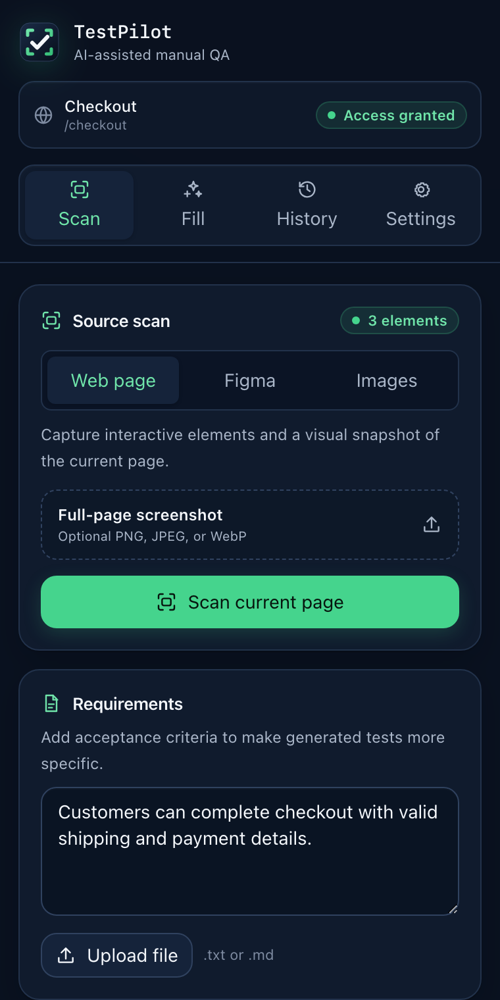
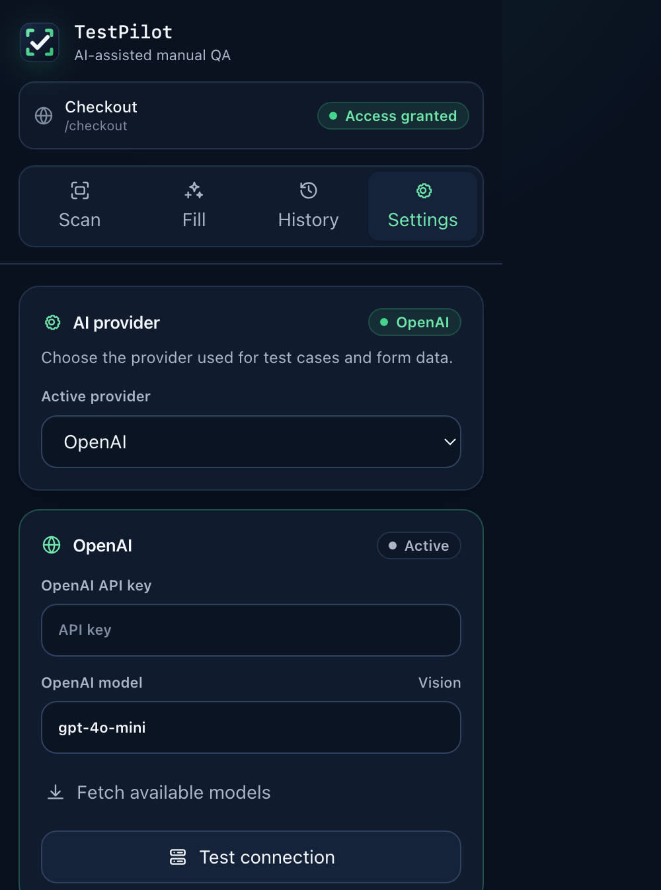

Stable release
Install the extension
Use the packaged release for normal use. The source-build instructions on GitHub are for contributors.
-
1
Download the latest stable release ZIP.
Download TestPilot for Chrome. If the download does not begin, open the latest release page.
-
2
Extract the ZIP to a permanent folder.
Do not leave it inside Downloads if you regularly clean that folder. Chrome needs the extracted files to remain in place.
-
3
Open
chrome://extensionsand enable Developer mode.Paste the address into Chrome’s address bar. Turn on Developer mode in the upper-right corner.
-
4
Choose Load unpacked and select the extracted folder.
Pin TestPilot from Chrome’s Extensions menu, then open its side panel. Updates require downloading and extracting the new stable ZIP, then choosing Reload on this extensions page.

Choose one connection
Connect an AI provider
In TestPilot, open Settings, choose an Active provider, add its credential and model, or choose Fetch available models. Then select Test connection and Save settings.

OpenAI
- Sign in and create an OpenAI API key.
- In TestPilot Settings, choose OpenAI as the Active provider and paste it into OpenAI API key.
- Keep the suggested model or fetch another model, then choose Test connection.
Gemini
- Sign in to Google AI Studio and create or view a Gemini API key.
- In TestPilot Settings, choose Gemini and paste it into Gemini API key.
- Select a model, choose Test connection, and save when the connection succeeds.
Anthropic
- Sign in to the Claude Platform and create a Claude API key.
- In TestPilot Settings, choose Claude (Anthropic) and paste it into Claude (Anthropic) API key.
- Select a model, choose Test connection, and save when the connection succeeds.
Local OpenAI-compatible server
- Install and start a compatible server. For one documented option, see Ollama’s OpenAI compatibility guide.
- Choose Local LLM, enter the served model name, and set Local LLM base URL. TestPilot defaults to
http://localhost:11434/v1. - Choose Test connection. For image scans, use a local model that accepts image input and enable that capability when TestPilot asks.
Finish every provider path: after the connection test succeeds, choose Save settings. Provider usage, billing, quotas, and data handling remain governed by the provider you selected.
Optional design access
Connect Figma
Add a token only if you plan to scan Figma Design files. TestPilot does not require Figma for live-page or uploaded-image scans.
- 1Open Figma’s official token instructions.
Follow the personal access token guide: account menu → Settings → Security → Generate new token.
- 2Limit the token.
Choose an expiry of no more than 90 days, select only the
file_content:readscope, and limit file access to the designs you need. - 3Copy it once and store it safely.
Figma shows a new token once. Do not put it in screenshots, messages, source files, or tickets.
- 4Save it in TestPilot.
Open Settings → Figma connection, paste the token, and choose Save settings.
Quick checks
If setup does not connect
- Chrome says the manifest is missing.
- Select the extracted extension folder itself—the folder that contains
manifest.json—not the ZIP or a parent folder. - The provider test fails.
- Confirm the correct provider is active, re-paste the key, check provider billing or quota status, and fetch the currently available models.
- A local model cannot connect.
- Keep the server running, confirm its OpenAI-compatible base URL and model name, and allow TestPilot’s requested local-origin access.
- Figma returns 403 or an access error.
- Confirm the token has
file_content:read, can access that file, and has not expired.